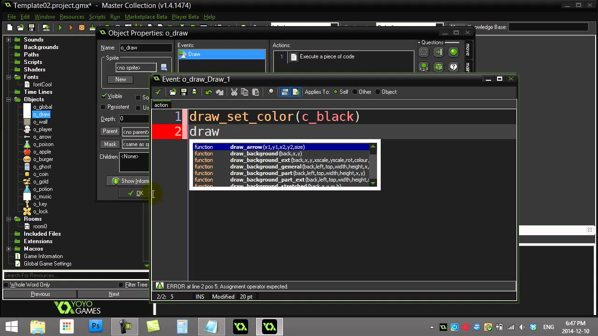
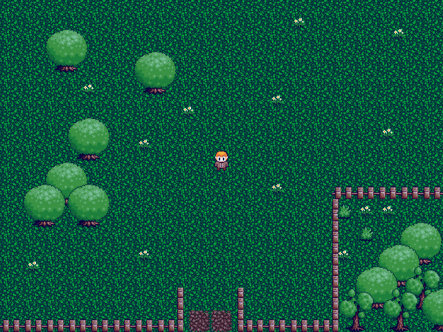
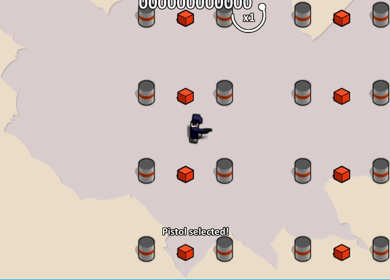
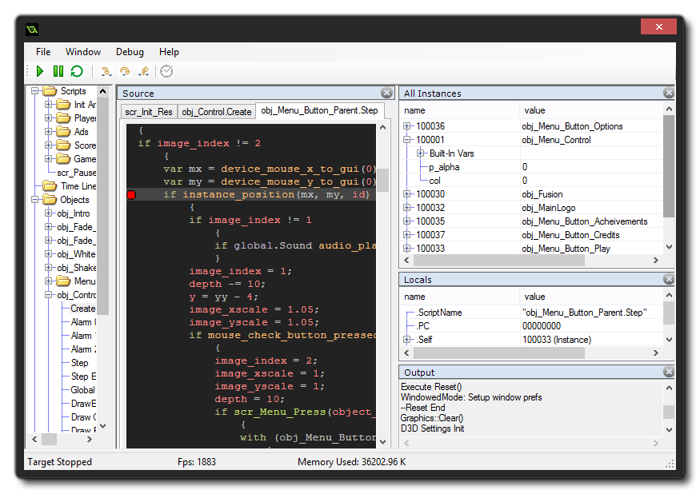
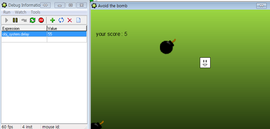
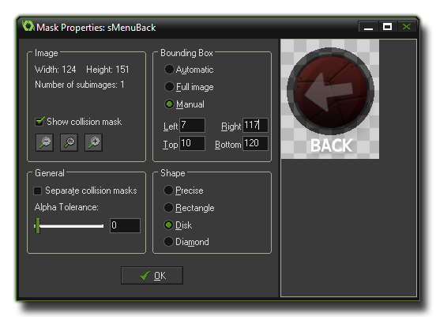
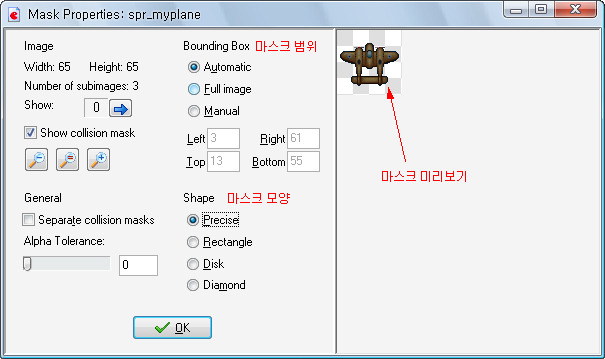

글로벌 변수란 어떤 변수를 하나의 오브젝트 안에서만 사용되도록 하는 것이 아니라 어플리케이션 전체에서 사용될 수 있도록 하는 것이다.
간단히 예를 들자면, 각각의 몬스터의 체력을 다르게 지정할 필요가 있는 게임에서는 그 몬스터의 체력을 일반 변수(로컬 변수)를 통해서 지정한다.
하지만, 플레이어의 돈이나 기타 게임 시스템과 관련된 변수들은 어떤 한 오브젝트에만 적용될 것이 아니라 어플리케이션 전체에 적용될 필요성이 있으므로 글로벌 변수를 사용해야 한다.
룸을 이리저리 넘겨다녀야 하는 게임의 경우 룸간에 뭔가를 전달할 수 있는 방법이 사실상 없다보니 글로벌 변수 사용이 필수이다.
참고로 글로벌 변수는 삭제가 불가능하다.

게임에서 사용되는 룸의 크기가 너무 클 때, 우리는 게임을 플레이하는 데 어려움을 겪는다.
이때 필요한 것이 바로 뷰라는 기능이다.
뷰는 한 오브젝트를 자동으로 추적하여 그 오브젝트를 중심으로 그 주위를 화면상에 보여준다.
코드를 사용하면 룸 상의 특정 지점을 지정하거나 반대로 뷰 상의 특정 지점을 다른 곳에 활용할 수 있다.
대표적으로 UI처럼 화면에 고정되어야 하는 인스턴스들은 뷰를 기준으로 draw 해주면 UI가 이탈하는 문제가 없다.
이 기능은 다양한 방법으로 응용되곤 하는데, 대표적으로 2인용 게임이 있다.
한 화면에 여러 시점의 뷰를 보여줄 수 있으므로 박스 헤드와 같은 2인용 게임을 만들 때 매우 유용하다.

뷰를 설정할 때는 그 뷰를 지정할 룸을 클릭한 후, 뷰 활성화에 체크를 해주면 된다. 물론, 추적할 오브젝트도 같이 설정해야 한다.

자신이 만든 게임을 테스트해보고 싶을 때 사용하는 기능.
디버그 모드 상에서는 변수, 게임 스피드 등을 매우 쉽게 확인하거나 조작할 수 있으므로 유용하다.
간단히 예를 들자면, 어떤 이벤트가 일어날 조건이 플레이어의 레벨이 100을 달성했을 때라고 생각해보자.
이때는 겨우 테스트 한 번 하자고 레벨을 100까지 올려볼 수는 없을 것이다. 따라서 디버그 모드를 사용한다.


게임메이커에서 유용하게 사용되는 기능 중 하나가 바로 마스크이다. 이 기능을 통해 각각의 스프라이트의 충돌범위를 지정할 수 있다. 한마디로 판정박스.
기본적으로는 스프라이트 모양에 맞추어 자동으로 설정되나, 액션 게임 등에서 세세한 조작이 필요할 경우 Modify mask를 눌러 수정할 수 있다.
사각박스로 후려치거나 원형으로 대충 뭉개는게 아니라 픽셀대응으로 정밀하게 체크해주는 옵션이 있어서 매우 편리하다.

물론 사각박스나 원형으로 설정하는 것도 가능하고, 정밀 마스크를 쓸 때에도 사각의 충돌체크 범위를 또 설정해 2중 마스킹을 하는 것도 가능하다.